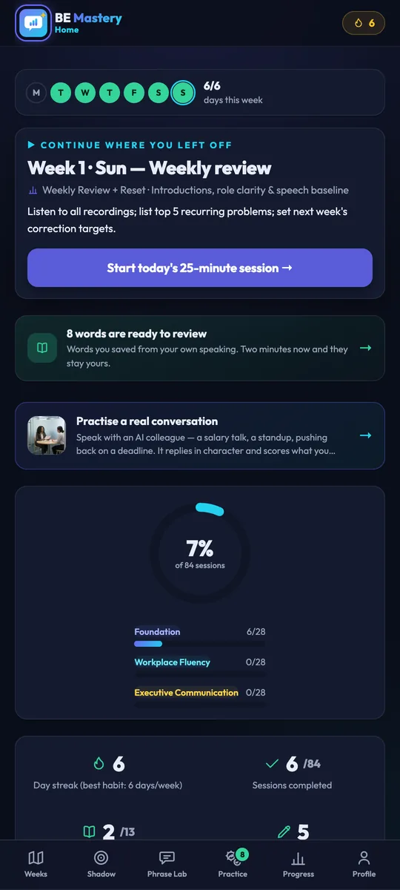

Speak English like you belong in the room.
Practise with AI. Shadow real speakers. Practise with real people. Build the confidence to speak when it matters.
No account needed. Works offline. Guidance in 15 languages — free on the web and Google Play.

Knowing English isn't the same as speaking confidently.
You read it fine. You follow the meeting. Then it's your turn, and the sentence you had ready arrives a beat too late — so you say the shorter, smaller version instead.
That gap isn't knowledge. It's rehearsal. It closes the same way it closes for musicians and athletes: a little, out loud, every day.
Twenty-five minutes. Every day.
One guided session a day for twelve weeks. You don't choose what to study — the road map already knows. You just show up and speak.
Learn
Today's phrases and the situation they belong to.
Shadow
Copy a real speaker's rhythm, line by line.
Speak
Record it in your own voice — the part that counts.
Feedback
One thing to fix, then say it again.
Borrow the rhythm of someone who already sounds right.
Play a real speaker, watch the words light up as they say them, then say it with them. Record, and the app shows you word by word where you drifted.
- The transcript scrolls and highlights in time with the speaker.
- The Challenge is a five-rung ladder: listen, speak together with the clip, from memory, unseen, then in your own words. The app picks the rung.
- Every word you stumble on is saved to practise later.
Practise before the real conversation.
Rehearse a salary talk, a standup or pushing back on a deadline with an AI colleague that replies in character — then get one thing to change, not a wall of corrections.
- Speak for a minute and get a report on delivery, message and credibility.
- See the stronger sentence next to the one you actually said.
- Anything written by AI is labelled as AI. It coaches you — it never pretends to be a person.
AI can help you practise. People help you use it.
See who else is waiting to practise right now, and work through a structured task together — four short voice turns, on today's curriculum step. Your level, goals and availability order the queue; anyone in line can practise with anyone.
- First names only. No photos, no profiles, no scores, no feed.
- Afterwards you each decide alone whether to practise again. Only a double yes makes you regular partners — nobody has to explain.
- Leave, block or end a partnership at any point. Nobody is told.
Practice Partner is part of General English and is for adults (18+).
Who is waiting now
From a sentence you copied to a conversation you carried.
Every part of BE Mastery feeds the next. Shadowing gives you the sentence, AI makes it correct, a real person makes it yours — and what you fumble comes back as tomorrow's practice.
Alone, with the app
Then, with a person
AI prepares you. People are where it becomes real. Then the loop starts again, one rung higher.
See yourself improve.
Not a percentage of a course. The same four things measured on the takes you actually recorded, round after round, so improvement is something you can point at.
An illustration of the report shape — your own numbers come from your own recordings.
- A streak and a lit-up calendar for the habit itself — six days a week is the target, not seven.
- A report for every session you recorded, kept so you can hear the difference months later.
- Words you stumbled on return on a spacing schedule until they stop being a stumble.
- A certificate at the end of the twelve weeks, and the evidence behind it.
Works offline. Recordings are saved on your device — we never keep a copy.
Two paths. One goal: confident communication.
Pick the one that matches the room you actually walk into. They are separate programmes with separate progress — switch whenever you like.
For meetings, interviews and everyday work
The full speaking system, from foundations to executive communication.
- Daily speaking practice and a 12-week road map
- Shadow Studio with Watch, Shadow and Challenge
- Practice Partner — practice with real people
- AI Coach, Executive Polish and life simulations
Practice Partner and human practice belong to this programme only.
For the workshop, the site and the interview
A technical programme built around the conversations a welder actually has.
- Technical vocabulary and workshop communication
- Safety briefings, quality checks and handovers
- Professional simulations with interviewers from the trade
- Interview preparation and career readiness
Starts with fifteen days of Foundations in your own language if you need them.
Your next conversation starts here.
Twelve weeks from now, someone will ask how your English got this good. The first session takes twenty-five minutes — the first win takes sixty seconds.